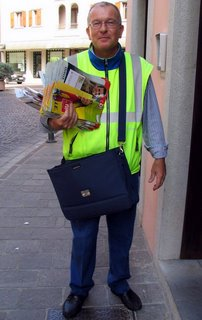

Ethan Jebediah Jones, 47, Indiana, PA
BioEthan is a 47 year old single male from Indiana, PA. He has worked for the local post office for 20 years as a mail carrier. Due to the failing economy, Ethan rarely goes to stores and has become an avid trader. He
trades every Saturday. He primarily scavenges for items at local yard sales and searches sites online to find local places to barter.
Goals
Ethan's goals in trading are to unload things he doesn't use anymore for items he does not have. He thinks its exciting to see
what others are trading and what he can get for his unused items. He's willing to put in effort to make a good trade, is hooked on trading and thinks its a lot of fun.